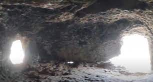
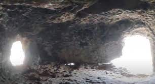

El conjunt arqueològic de Es Castellàs d’ Es Caparrot de Forma està format de grans pedres tanca l'istme que dóna accés al cap costaner, formant una espècie de bastió o fortificació que tanca el Caparrot. En el sector sud se li adossa un parament corb. En el seu interior hi ha, almenys, dues construccions de planta circular construïdes amb pedra petita. Les excavacions realitzades han permès constatar que l'habitació oest tenia unes dimensions de 6 per 3,5 metres. Tant aquesta habitació com la que està adossada al seu costat tenen la seva pròpia zona de combustió, situada prop de la muralla.
 

Editat per darrera vegada el